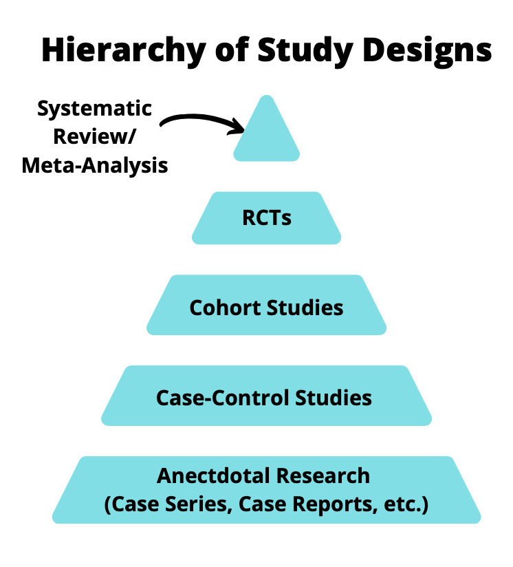

What is RWE?
You may have seen real-world evidence (RWE) being used increasingly in research settings. It has tremendous potential for answering important research questions, however what exactly is RWE? RWE is evidence generated from real-world data (RWD). RWD is defined by the FDA as data relating to patient health status and/or the delivery of health care routinely collected from a variety of sources (FDA December 2018). This data could be from electronic health records, medical claims and billing, electronic medical records, data from product registries, wearable devices, mobile devices and other sources. Sounds pretty good right? Well the quality of the evidence is only as a good as the quality of the study conducted.
Hierarchy of Research
Historically, the hierarchy of research has been that systematic reviews with a meta-analysis are at the top of the evidence pyramid, followed by randomized controlled trials (RCTs), cohort studies, case-control studies and anecdotal research.

RCTs are near the top of this pyramid for good reason. A well-conducted RCT can provide insight into efficacy of a treatment in a controlled environment so that no data is missing, both observed and unobserved confounders are balanced between groups and you can measure the variables you need for analysis. There are however, drawbacks/potential limitations: RCTs can be expensive to conduct, can require a long duration of follow-up, are not feasible to conduct ethically, limited sample size for assessing safety and limited generalizability. Luckily, observational study designs can help fill in the gaps in these areas.
Observational Studies
When people discuss about the hierarchy of study design, such as in Figure 1, the quality of the study is not mentioned. For example, is a poorly conducted RCT better than a rigorously conducted case-control study using observational data? That is up for debate however, observational studies can be used to supplement findings from RCTs or where RCTs are infeasible.
One of the key issues with observational studies is the variability in methodological rigor. Due to this, results can vary widely from study to study and really depend upon the researchers conducting the study. Luckily, recent strides have been made in this field. To mention a few, the STaRT-RWE template (Wang et al. 2021) and the principles behind emulating a target trial proposed by Hernan & Robins (Hernán and Robins 2016).
Examples of RWE
Discussing about RWE in theory is useful but what are some use cases? Recently, regulatory bodies are accepting RWE as part of submissions. These can vary from accepting burden of illness studies to help contextualize the current treatment and cost of available treatments to external control arms (ECA). ECAs can be beneficial when a single arm clinical trial is conducted. In certain disease areas, such as cancer, single arm trials are common but this makes it difficult for regulatory reviewers to ascertain the efficacy of a treatment since there is no comparator arm. Demonstration of safety is another area that RWE is well-suited due to the larger sample size and the generalizability of findings to real-world settings.
Purpura et al. (Purpura et al. 2022) reported 116 FDA-approvals of New Drug and Biologics License Applications. Of these 116, 83 used RWE to support therapeutic context and 88 used RWE to support safety and/or effectiveness. Over the coming years, these numbers are expected to rise as the methodological rigor of these studies increases.
What’s Next?
RWE is starting to be adopted more by regulatory bodies, with the FDA accepting RWE as part of submissions (FDA December 2018), as well as the National Institute for Health and Care Excellence (NICE) issuing guidance for the development of RWE. It is a very exciting time for developing RWE given the vast data that is available! However, always keep in mind that these studies need to be conducted to similar standards that we would hope a clinical trial is.